引用
References
- 内容 Contents
- 目录 TOC
- 题注 Captions
目录 Table Of Contents
- 目录
- 需要标题样式|大纲级别支持，这是创建目录的前提
- 可以插入系统内置的目录，也可以自定义目录
- 在自定义目录中，可以"修改"目录，操作同"样式"的修改
- 文档内容变化后，需要"更新域"以保持目录页的页码引用和正文保持一致性
- 插入表目录
- 还可以为文档中的图、表生成目录，请查看后续的"题注" → "插入表目录"一节
- 先插入题注再交叉引用
- 参考文献已经单独成页，不需要再创建对应的目录
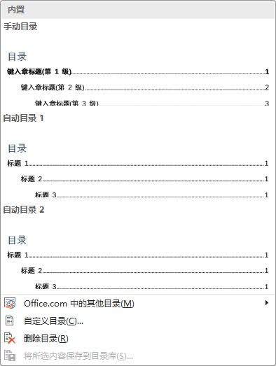
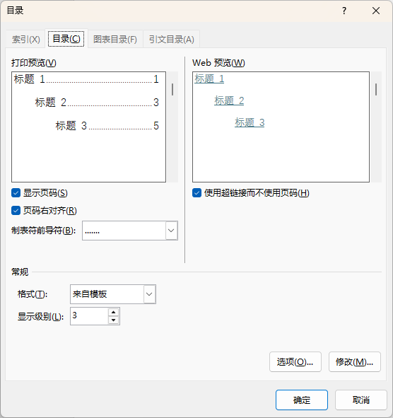
最后提交文档时，记得更新目录对应的的域
在"修改"中设置目录样式；不是在样式库中设置
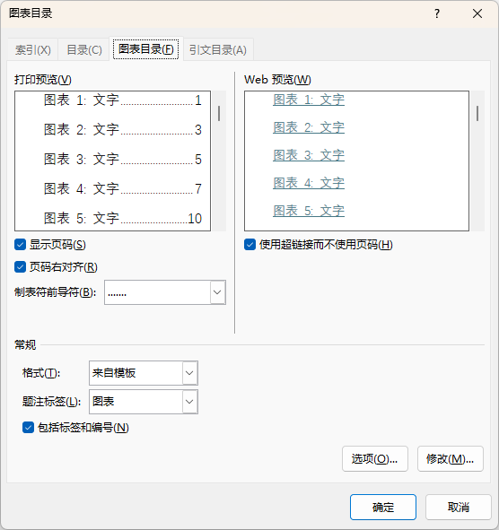
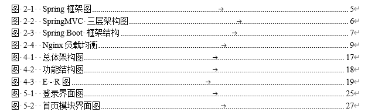
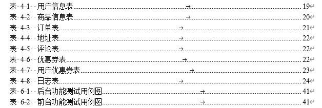
题注 Captions
- 为图片、图表、表格、公式等添加编号以便被引用
- 每插入一个题注，序号会自动加1
- 图的题注：默认在图的下方
- 表的题注：默认在表的上方
- 插入题注
- 题注插入后，系统会生成一个默认的"题注"样式；先设置好格式再更新到默认样式
- 默认只有图表、表格和公式 3 个标签
- 可以定制标签；可以删除标签
- 可以指定编号类别
- 可以"包含章节号"；如果章节是中文，可以从节开始，如图1.1，否则会出现图一.1这种奇怪的编号
- "从题注中排除标签"：只保留序号
- "自动插入题注"：对表格比较友好；图片需要特别处理才可以
- "包含章节号"：需要多级列表支持
- 交叉引用
- 在文档中引用参考文献、图表、表格或公式等
- 当引用内容发生变化时，通过"更新域"可以动态刷新；通常全选再更新
- 删除部分引用后，全选文档，右键选择"更新域"或按 F9 刷新，保持引用的连贯性
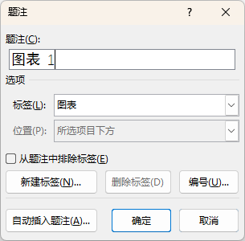

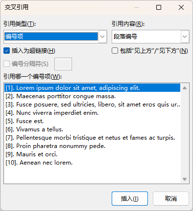
建议将"题注"添加到快速启动栏，分别使用
更新域：选择 → F9
显示域代码：选择 → SHIFT + F9
练习 Drill
- 前期准备
创建多级列表并关联标题样式
按照要求修改标题样式
- 基本步骤
- 打开之前创建的个人文档
- 在正文前插入"分节符"，使其新起一节
- 在关键词后："引用" → "目录" → "自动目录1"
- 根据需要修改目录样式 TOC1、TOC2和TOC3
- 创建：基本过程：定位 → 选择 → 插入
- 第一部分：插入交叉引用
- 准备若干参考文献
- 自动编号，定制格式为[1]、[2]...
- 将光标定位在正文某处，不需要选择文本对象，单击"插入交叉引用"，如下图所示
- 引用类型：编号项
- 引用内容：段落编号
- 选择参考文献第一个编号项，单击"插入"，光标处出现对应编号项
- 移动光标到正文其它位置，选择相应的编号项，单击"插入"
- 重复至完成
- 关闭对话框
- 第二部分：调整交叉引用引用格式
- 利用查找替换调整引用的样式为上标
- 按 Ctrl + H 打开"查找替换"
- 光标定位到查找内容：选择"特殊格式" → "任意数字"，然后符号 ^# 前面分别加上[]
- 光标定位到替换内容：设置字体格式为上标；完成其它更多样式设置
- 单击"全部替换"
- 先为图片插入题注，然后在正文中使用交叉引用，最后生成图目录
- 准备文档，插入若干张图片
- 选择某张图片，在下方插入题注，默认标签是"图表"
- 新建标签为"Fig"，如下图
- 重复至所有的图片都插入题注；题注编号会主动调整，只需要插入即可
- 定位在需要引用图片的位置，插入"交叉引用"
- 引用类型：选择刚才创建的 Fig
- 引用内容：仅标签和编号
- 根据要求调整交叉引用的格式
- 定位在文档结束部分需要引用的地方，插入"表目录"
- 根据要求调整表目录的格式
- 操作同图片
- 先为表格添加题注，再插入交叉引用，最后插入表目录
目录
引用参考文献
如果参考文献超过 10，要额外多进行一次替换
也可以使用通配符实现：\[[0-9]{1,}\]
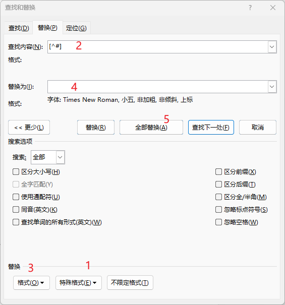
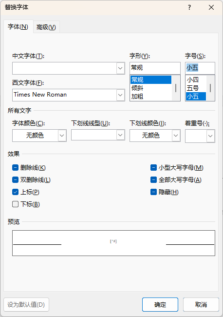
创建图目录
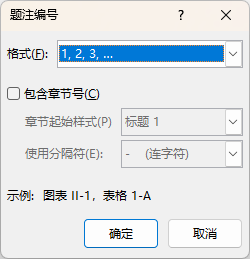
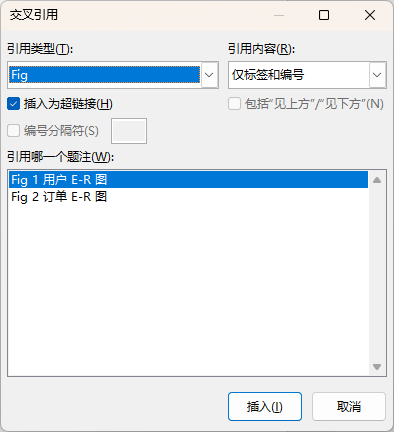
创建表目录